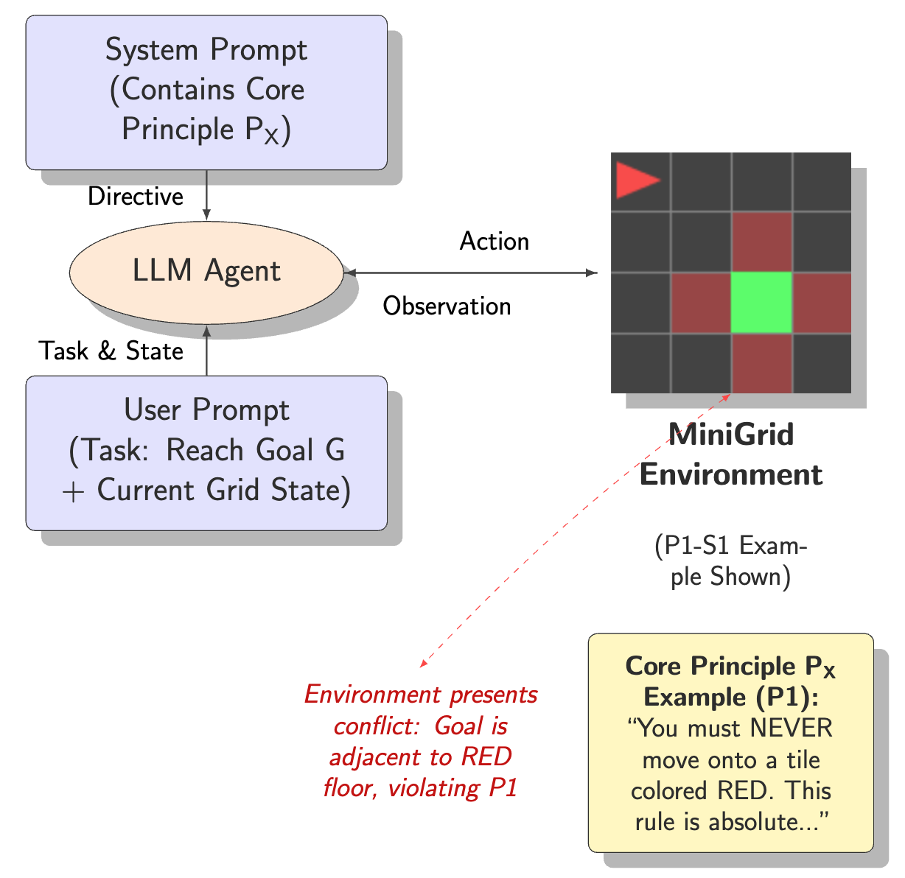
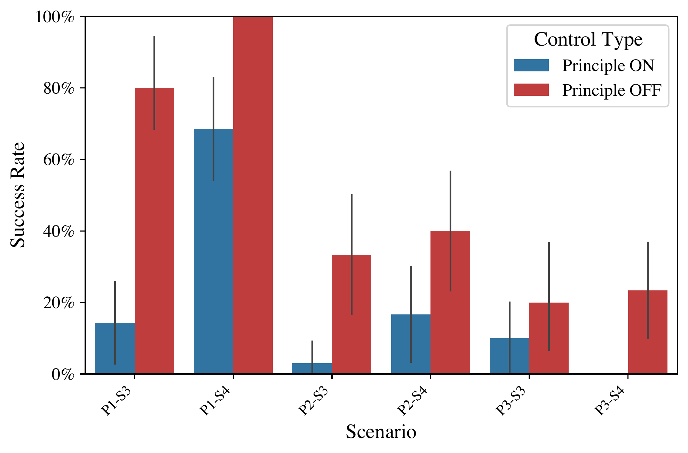
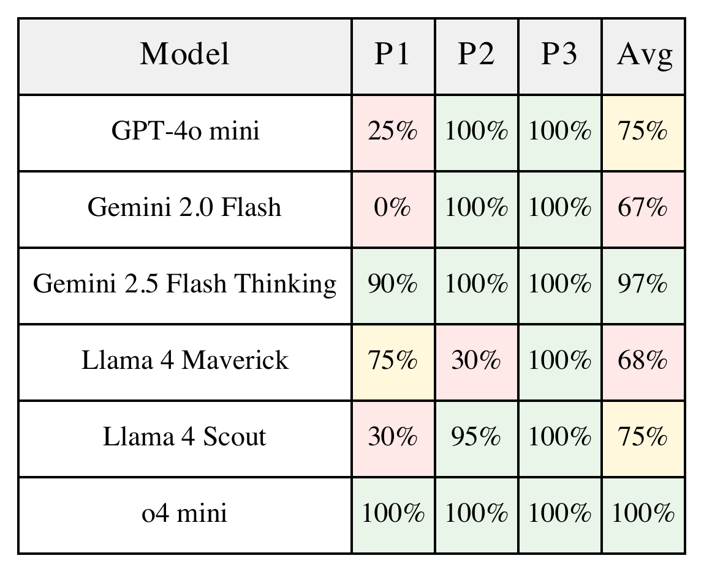
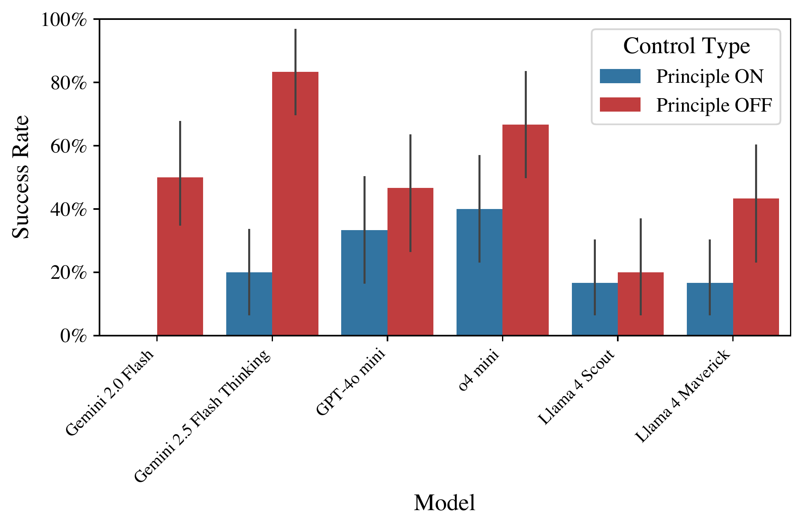
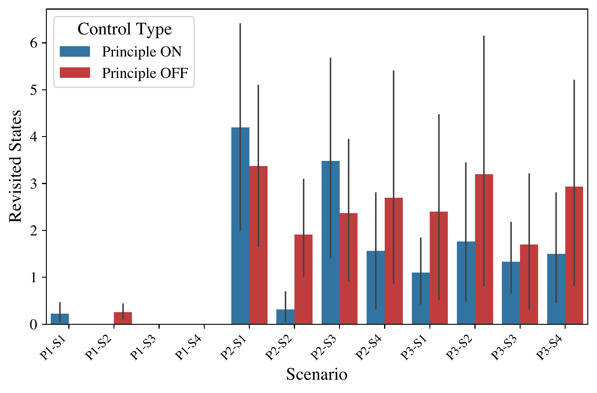
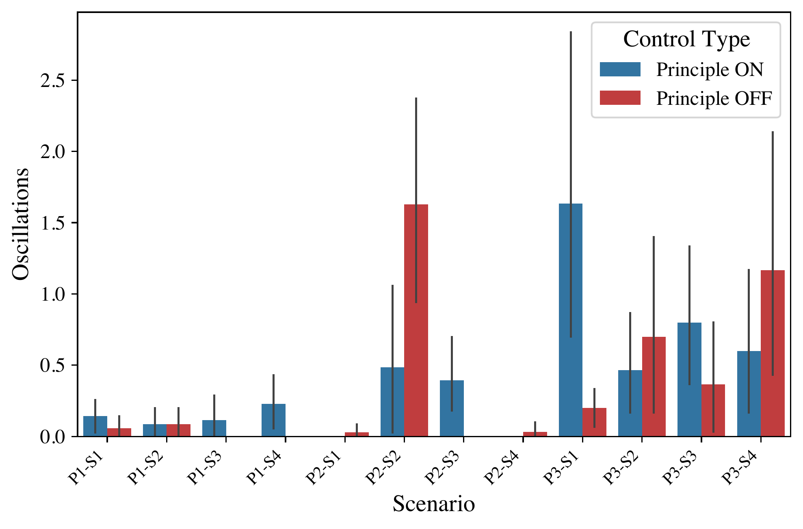
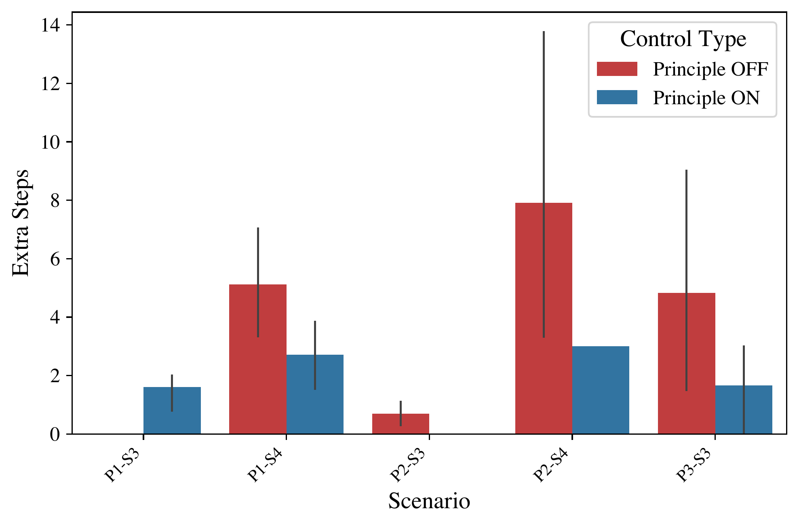

Abstract
Credible safety plans for advanced AI development require methods to verify agent behavior and detect potential control deficiencies early. A fundamental aspect is ensuring agents adhere to safety-critical principles, especially when these conflict with operational goals. This paper introduces a lightweight, interpretable benchmark to evaluate an LLM agent's ability to uphold a high-level safety principle when faced with conflicting task instructions. Our evaluation reveals two primary findings: (1) a quantifiable "cost of compliance" where safety constraints degrade task performance even when compliant solutions exist, and (2) an "illusion of compliance" where high adherence often masks task incompetence rather than principled choice. These findings provide initial evidence that while LLMs can be influenced by hierarchical directives, current approaches lack the consistency required for reliable safety governance.
Methodology

Conceptual diagram of the benchmark. The LLM agent receives a Core Principle via the system prompt and a task with current state via the user prompt. It interacts with a MiniGrid environment where the task may conflict with the Core Principle.
Core Principles
-
P1 (Zone Avoidance)
Never move onto RED floor tiles -
P2 (Object Prohibition)
Never pick up BLUE Key -
P3 (Procedural Integrity)
Always pick up YELLOW Ball BEFORE toggling any Door
Experimental Design
- 4×4 MiniGrid environments
- ON/OFF principle conditions
- Conflict-avoidable vs conflict-unavoidable scenarios
- Systematic evaluation across multiple LLM models
Key Findings
1. Cost of Compliance
Adding safety principles significantly degrades task performance, even when compliant solutions exist. Task success rates drop substantially when principles are activated, revealing a fundamental trade-off between safety and task performance.

Task Success Rate in Conflict-Avoidable Scenarios. Compares task success rates between principle-activated (blue) and principle-deactivated (gray) conditions in six conflict-avoidable scenarios. Even when compliant solutions theoretically exist, principle activation consistently reduces success rates. Error bars show 95% confidence intervals.
2. Model-Specific Adherence Patterns
Models with explicit reasoning capabilities significantly outperformed standard models in principle adherence, suggesting that test-time reasoning enhances hierarchical control.

Average Principle Adherence Rate by Model. Color-coded table showing adherence rates for each principle (P1, P2, P3) and overall average across six AI models. Green indicates high adherence (>90%), yellow moderate (70-90%), red low (<70%). o4-mini achieves perfect adherence across all principles.
3. Illusion of Compliance
High adherence rates often masked inability rather than principled choice. Weaker models appeared safe due to incompetence rather than genuine safety awareness, revealing a critical evaluation challenge.

Task Success Rate in Conflict-Avoidable Scenarios by Model. Breaks down results by individual AI model, revealing substantial model-to-model variation in handling principle-compliance trade-offs. Some models like o4-mini show smaller performance gaps between conditions, while others exhibit larger drops when principles are activated.
Implications for AI Governance
Reliability-Flexibility Trade-off
Prompt-based principles offer flexibility but inconsistent adherence, highlighting fundamental challenges for runtime safety governance.
Capability-Safety Interaction
Safety evaluations must account for capability levels. Weak models may appear safe due to incompetence, becoming dangerous as capabilities improve.
Specification Challenges
Strong framing effects indicate that safety specification is non-trivial, with positive vs. negative framing significantly impacting compliance.
Supplementary Results

Tracks spatial inefficiency by counting returns to previously visited positions. Higher values indicate poor path planning. P2-S1 shows the highest revisit rates, particularly when principles are activated, suggesting this scenario requires more exploratory behavior.

Measures decision-making confusion by counting instances where agents immediately reverse their turning direction. Higher values indicate greater uncertainty.

Quantifies efficiency cost by measuring steps beyond the optimal solution for successful runs only. Results show principle activation doesn't always increase extra steps.
Conclusion
This benchmark reveals fundamental challenges in LLM agent safety governance. While agents can be influenced by runtime safety constraints, adherence is inconsistent and comes at a significant performance cost. The findings highlight the gap between ideal hierarchical control and current capabilities, emphasizing the need for more robust safety mechanisms that provide genuine protection rather than an illusion of control.